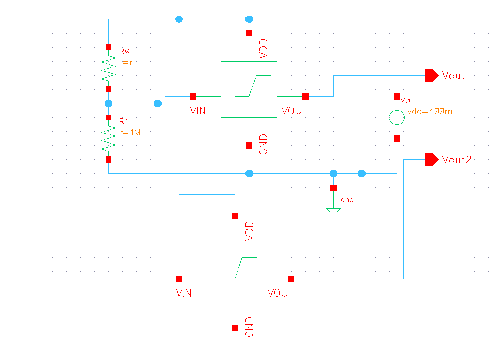
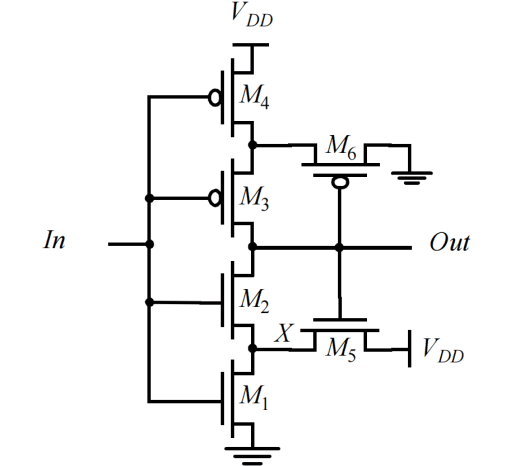
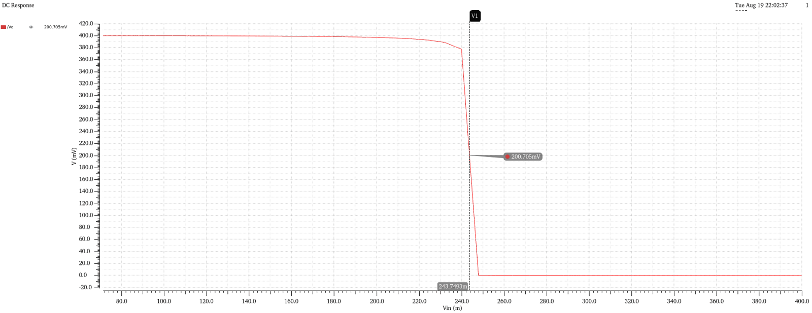
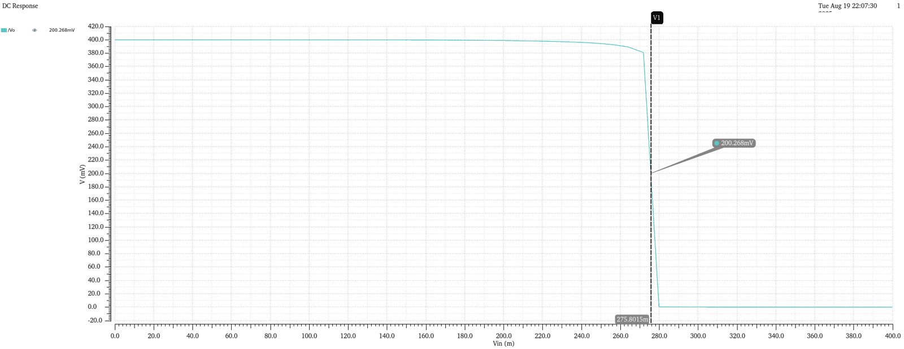
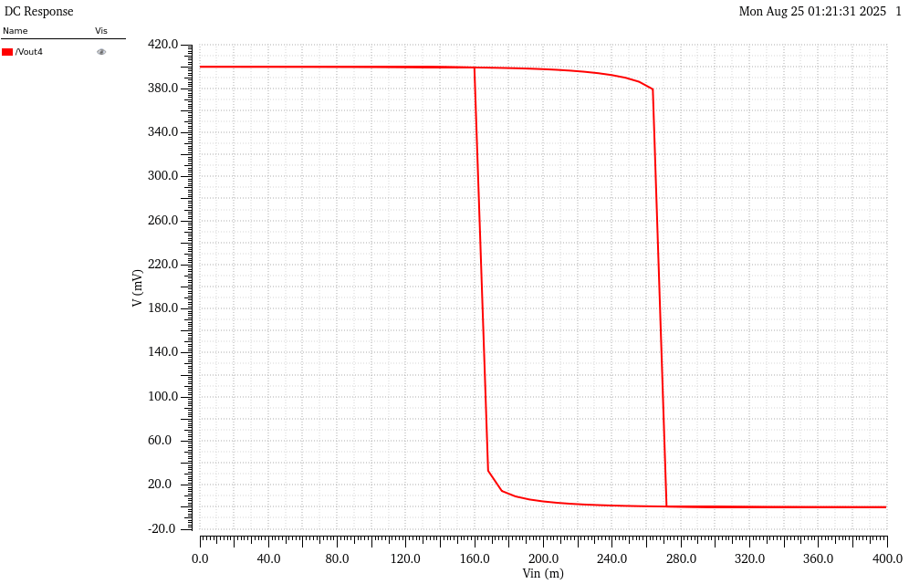
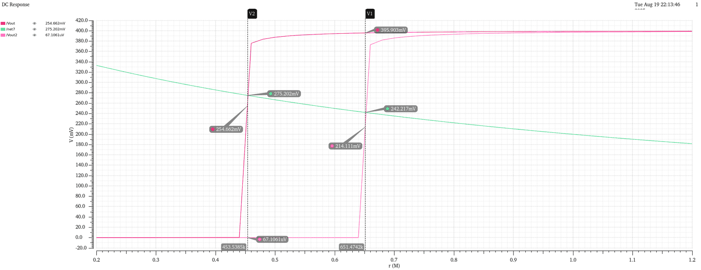
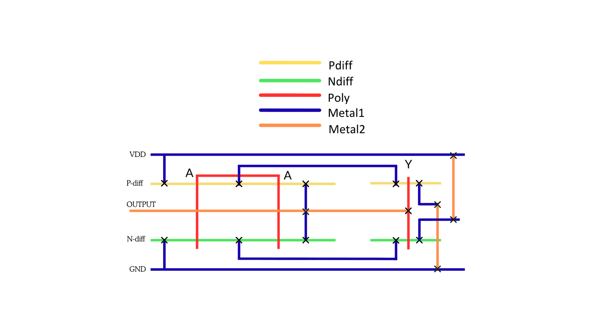
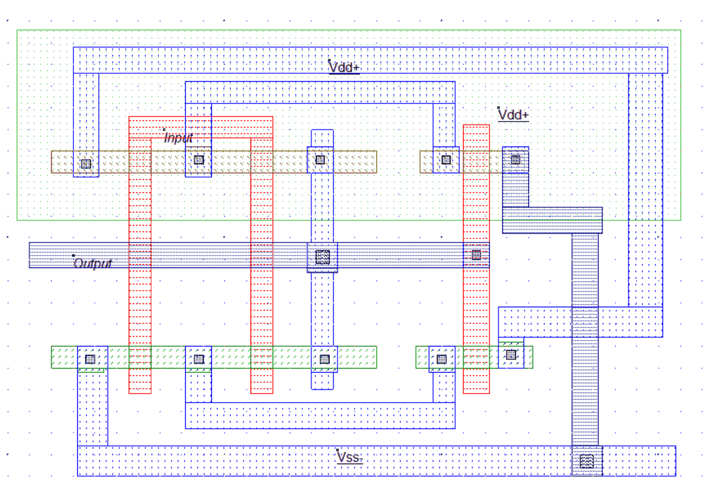
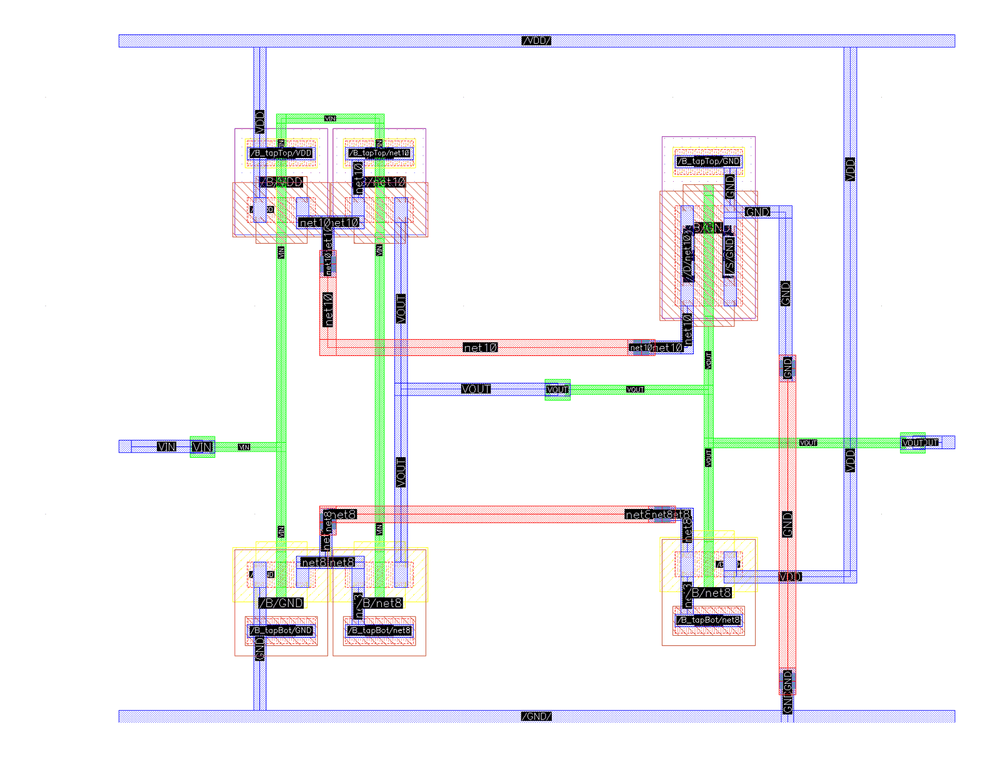

The problem
Humidity decides how fast food spoils
In Bangladesh, much food and grocery stock is sold with little or no protective packaging, which adds to post-harvest losses and food-safety risk. Excess humidity inside a package speeds up mould and bacterial growth. A package that could report "this got too humid" would catch spoilage early.
The catch: sensing electronics on a single-use package must be almost free, almost powerless and compostable. That rules out batteries, microcontrollers and conventional plastic.
Safe storage humidity by food type
| Food | Safe RH |
|---|---|
| Powdered foods, spices | 30–40% |
| Confectionery | 45–55% |
| Dry grains, cereals, nuts | 50–60% |
| Baked goods | 60–70% |
| Dairy (cheese, butter) | 65–75% |
| Fresh produce, meat, fish | 85–95% |
Our 60% / 75% thresholds target dry goods. Other foods need re-tuned thresholds.
How it works
From humidity to a two-bit alarm
Three stages, no microcontroller. The sensor turns humidity into resistance, a divider turns resistance into voltage, and two Schmitt triggers turn voltage into two clean digital flags.
Graphene-oxide chemiresistor
Printed film whose resistance falls as it absorbs water: 1.2 MΩ at 30% RH down to 0.2 MΩ.
Resistive divider
With a fixed R2 = 1 MΩ to ground:
Vx = 0.4 V · R2 / (R1 + R2)
Schmitt trigger A
Trips at 242 mV (≈60% RH)
Schmitt trigger B
Trips at 275 mV (≈75% RH)
Two digital flags
OUT1 low = caution, OUT2 low = danger. Hysteresis holds the alarm until the next read.

Why Schmitt triggers, not comparators?
A comparator needs a reference voltage and a bias current, and that current alone would exceed our whole power budget. A Schmitt trigger is just six transistors: its switching threshold is set by transistor sizing, so the reference is built into the layout.
Hysteresis gives two more wins. The output doesn't chatter when humidity hovers near a threshold. And because the output only flips back when the input drops well below the trip point, it works as a one-bit memory: a humid event is still recorded when the package is read days later.
Design
Setting the two thresholds
The divider maps each humidity level to a voltage. We sized each Schmitt trigger so it trips exactly where the curve crosses the caution and danger levels.
Curve computed from Vx = 400 mV / (1 + R1/1 MΩ). Crossing points match the Spectre sweep below.

Transistor widths (L = 45 nm)
| Device | Trigger A · 242 mV | Trigger B · 275 mV |
|---|---|---|
| W1, W2 | 120 nm | 120 nm |
| W3, W4 | 240 nm | 840 nm |
| W5 | 240 nm | 4.8 µm |
| W6 | 240 nm | 120 nm |
Channel length fixed; only widths were tuned to place each trip point.



Results (simulation)
Clean switching, nanowatt power
We swept the sensor resistance from 1.2 MΩ down to 0.2 MΩ in Spectre, which is the same as humidity rising, and watched both outputs.

Below both thresholds
- Humidity
- ≈30% RH
- R1
- ≈1.2 MΩ
- Vx
- ≈182 mV
Storage limit exceeded
- Humidity
- ≈60% RH
- R1
- ≈650 kΩ
- Vx
- ≈242 mV
Likely spoiled
- Humidity
- ≈75% RH
- R1
- ≈450 kΩ
- Vx
- ≈276 mV
Static power at 0.4 V
Whole readout, both triggers plus divider
What tens of nanowatts buys
At 0.4 V every transistor sits in weak inversion, so the only current is subthreshold leakage. At about 100 nW, one joule of energy would run the readout continuously for roughly four months.
In practice it doesn't need to run continuously at all. It only has to wake while a phone or reader is held near the package, and the hysteresis remembers what happened in between.
Physical design
From stick diagram to layout
The 6T Schmitt trigger was planned as a stick diagram, then drawn in two tools: Microwind and Cadence Virtuoso Layout XL.



System integration
Putting it on a compostable package
Proposed laminate, outside to inside
We compared PLA laminates with coated paper, PHA, starch and edible films. PLA–paper–nanocellulose balances printability, food safety and compostability at a moderate cost.
Process flow
- Prepare substrate: laminate PLA onto a paper or nanocellulose layer, then plasma-treat it for ink adhesion.
- Print electrodes: interdigitated carbon electrodes, cured below 90 °C.
- Deposit the sensing film: a humidity-sensitive blend (starch/PVA or chitosan) bridging the electrodes.
- Add the reference resistor: a printed carbon trace, trimmed to set the divider point.
- Mount the die: bond the Schmitt-trigger chip with anisotropic conductive adhesive.
- Seal and calibrate: compostable lacquer, then a two-point check with 33% and 75% RH salt solutions.
Cost per pouch
| Plastic | Proposed | |
|---|---|---|
| Material (50 g) | $0.084 | $0.110 |
| Fabrication | $0.020 | $0.030 |
| Total | $0.104 | $0.140 |
Packaging only, before the sensor die. About 35% more per unit, expected to fall with scale.
Limitations
What this doesn't show yet
- All results are from simulation. Nothing has been fabricated or measured.
- No process-corner, temperature or supply-variation analysis. Subthreshold trip points shift with all three.
- The graphene-oxide sensor is a behavioural resistor model, not measured film data.
- The RF harvesting front-end is proposed, not designed.
Next steps
Where we'd take it
- Corner and Monte Carlo analysis, plus temperature compensation of the trip points.
- Design the rectifier and cold-start circuit, and size the storage capacitor for a phone-distance read.
- DRC/LVS-clean layout of the full readout, then a small pilot to measure long-term sensor drift.
- Per-food threshold sets, trimmed through the printed reference resistor.
Team
Who built it
Md Wahiduzzaman, Elmul Soad Swopno and Md Rahib-bin-Hossain, Department of Electrical and Electronic Engineering, Islamic University of Technology (IUT), Gazipur, Bangladesh.
Course project for EEE 4861 (VLSI Design), submitted to Dr. Md Masum Billah.
Key references
- L. A. P. Melek, A. L. da Silva Jr., M. C. Schneider, C. Galup-Montoro, "Analysis and design of the classical CMOS Schmitt trigger in subthreshold operation," IEEE TCAS-I, vol. 64, no. 4, 2017.
- W.-S. Chung, M.-K. Kim, O. Yang, "Simple and high-sensitive resistance-to-time converter using current-mode Schmitt triggers," IEICE Electronics Express, vol. 9, no. 24, 2012.
- M. Mraović et al., "Humidity sensors printed on recycled paper and cardboard," Sensors, vol. 14, no. 8, pp. 13628–13643, 2014.
- H. M. Sasmitha et al., "A review on bio-based polymer polylactic acid (PLA) potential on food packaging," 2024.